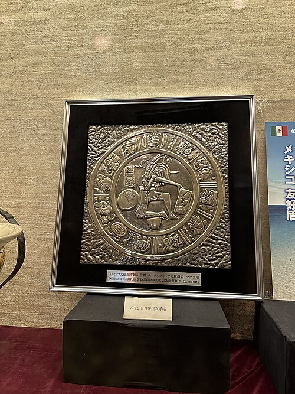
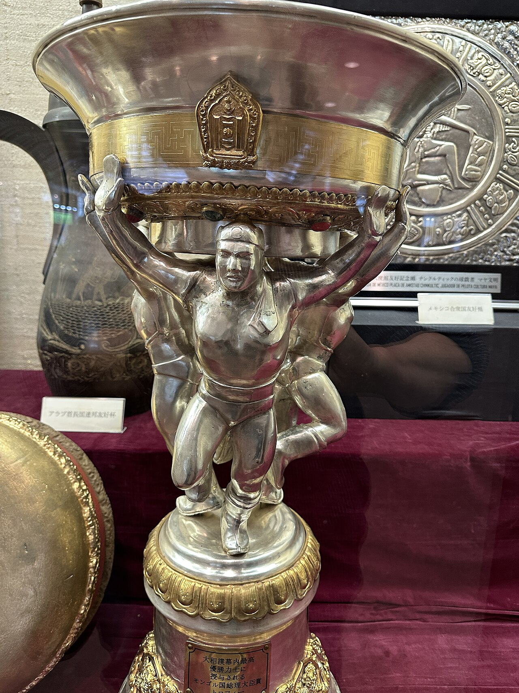
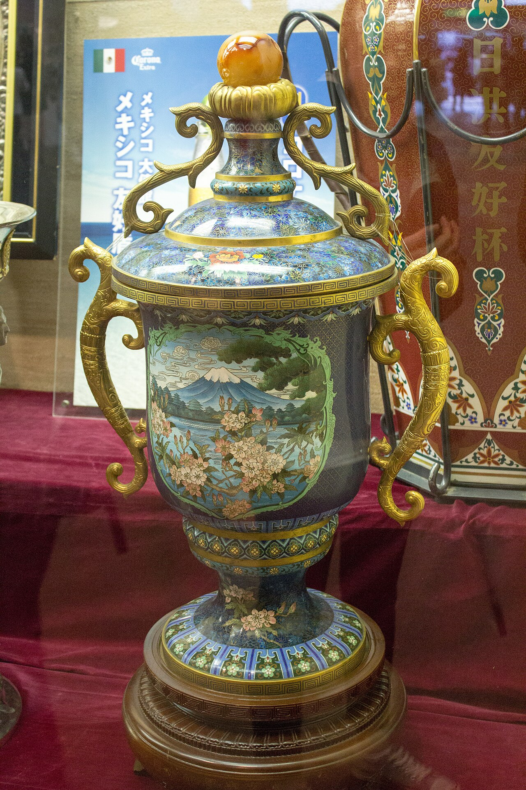

These are the diplomatic trophies given out to the wrestler who wins the yusho (championship) in the top division:
- French–Japanese Friendship Cup (and giant macaron)
- United Mexican Friendship Plaque
- Cup of His Highness
- Chiang Rai Elephant trophy
- Hungarian Friendship (tea) Cup
- Czech crystal cup
- Mongolian Prime Minister's award
Tokyo Specific Diplomatic Trophies
- Chinese Embassy Award
- United States President's Cup
- Cup of the Bulgarian government
- Italia Hatsubasho Award
- Japanese–Israel Friendship Trophy

